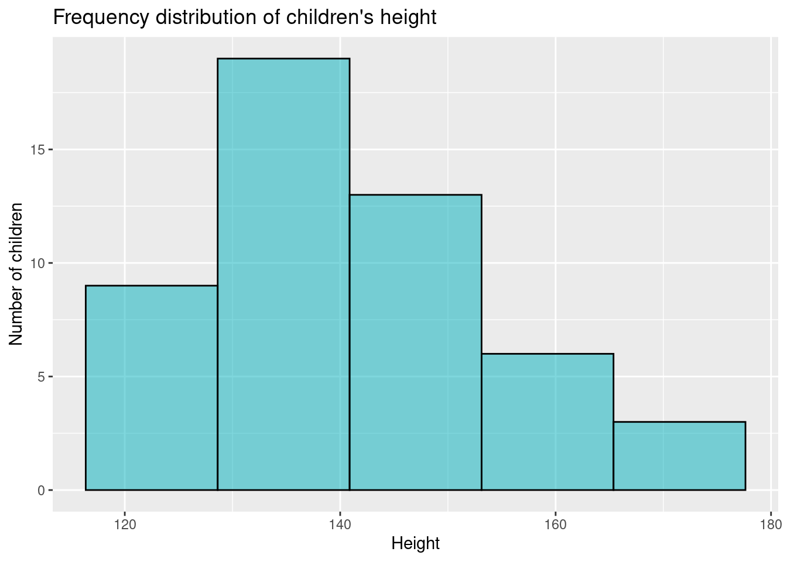

Sec. 3 The Basics: Visualization
3.1 Frequency Distribution
The frequency of a value is the number of times it occurs in a dataset. A frequency distribution is the pattern of frequencies of a variable. It’s the number of times each possible value of a variable occurs in a dataset.
Example: in a given dataset that record the height of 50 children, we can group the data in 6 height categories.
Now, we can build a frequency distribution table, adding the Absolute Frequency (i.e. the number of children within each category) and the Relative Frequency (i.e. the percentage over the total). We will obtain…
| Height (cm) of children | Absolute frequency | Relative frequency |
|---|---|---|
| 120 – 130 | 9 | 18% |
| 130 – 140 | 10 | 20% |
| 140 – 150 | 13 | 26% |
| 150 – 160 | 11 | 22% |
| 160 – 170 | 7 | 14% |
| Total | 50 | 100% |
3.1.1 Graphical representation of frequency distribution
It is important to graphically represent the data and group of data. In this case, frequency distribution can be presented in graphical form as: histograms, bar plot (or bar chart) and pie plot.
Histograms
A histogram is a type of graph in which each column represents a numeric variable, in particular that which is continuous and/or grouped.
Other features:
- The height of the column shows the frequency for a specific range of values.
- Columns are usually of equal width, however a histogram may show data using unequal ranges (intervals) and therefore have columns of unequal width.
- The values represented by each column must be mutually exclusive and exhaustive. Therefore, there are no spaces between columns and each observation can only ever belong in one column.
